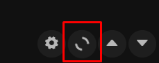
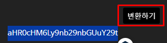
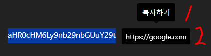
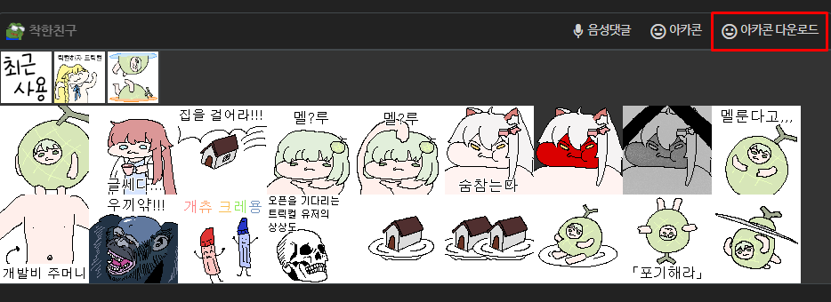
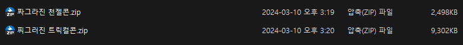

아카플러스 v1.2.10
안녕하세요
착한친구
입니다.
아카플러스
를 사용해주셔서 감사합니다.
언제 업데이트하고 언제 뭘 할지 모르는 확장앱인데도 불구하고,
꾸준히 써주시는 챈럼들에게 감사 인사를 드립니다.
주요 기능 및 사용 방법
- 자동 새로고침 사용법 -

아카라이브 채널 내 우측 하단의 아이콘을 클릭하신 뒤,
아이콘이 빙글빙글 도는 것을 확인하셨다면 5초 주기로 채널 게시글이 새로고침됩니다!
- base64 문자 변환 사용법 -

아카라이브 게시글 내용에서 base64 문자를 선택한 뒤 나타나는 변환하기 버튼을 클릭해줍니다!

1. 복사하기 버튼을 클릭해서 변환된 문자를 복사합니다!
2. 또는, 변환된 문자가 URL 링크일 경우, 해당 문자를 클릭해서 페이지를 이동합니다!
- 아카콘 다운로드 사용법 -

아카라이브 아카콘을 구매한 뒤, 아무 게시글에 들어가서 댓글 입력 폼으로 이동합니다.
아카콘 다운로드 버튼을 클릭합니다!

- Update Log -
v1.2.10 / 2024-04-28
옆구리 광고가 보여서 이거 없앴어요.
v1.2.9 / 2024-04-07
구글 배너 광고는 안보이게 처리하고, 유저 배너 광고는 건들지 않게 처리했습니다.
아카라이브 유저 배너 광고 보는 맛이 좀 있어서 얘만 따로 처리해보려고 뭔가 시도중...
v1.2.8 / 2024-03-16
아카콘을 따운받을때 불필요한 로그를 제거하였습니다.
이전 버전에서 문제가 있었던 아카콘 다운로드 속도를 개선하였습니다.
v1.2.7 / 2024-03-16
통일되지 않은 아카콘 사이즈와 webp 확장자가 싫어서 다음과 같은 조치를 취했습니다 :
1. 아카콘이 webp일 경우, 이미지 사이즈를 100x100으로 리사이징합니다.
아카콘이 png는 보통 100x100으로 업로드하는 것 같고,
webp는 200x200으로 올라오는 것 같아서 일단 100x100으로 사이즈를 통일시켰습니다.
2. 아카콘이 webp일 경우, 이미지 확장자를 webp에서 png로 변환합니다.
v1.2.6 / 2024-03-13
다운로드한 아카콘의 확장자로 인한 버그를 수정하였습니다.
젠장
2024-03-10
아카콘을 다운로드합니다!
아카콘 스토어에서 받을 땐 움짤이 mp4로 받아져서 좀 그래갖고... 그래서 맨들었습니다.
2024-03-01
base64로 인코딩된 문자를 디코드해줍니다!
예시:
7JWI64WV7ZWY7IS47JqUIOywqe2VnOy5nOq1rOyeheuLiOuLpC4= -> 안녕하세요 착한친구입니다.
2023-07-09
자동 새로고침시 이미지 썸네일이 나오지 않던 이슈를 해결했습니다.
- 알려진 버그 -
없습니다. 근데... base64 관련해서 뭔가 버그가 있을 것 같기도 하고 없을 것 같기도 하고...